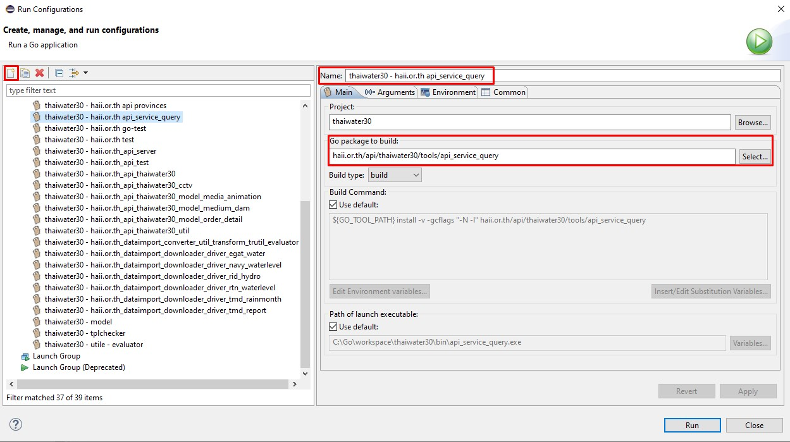
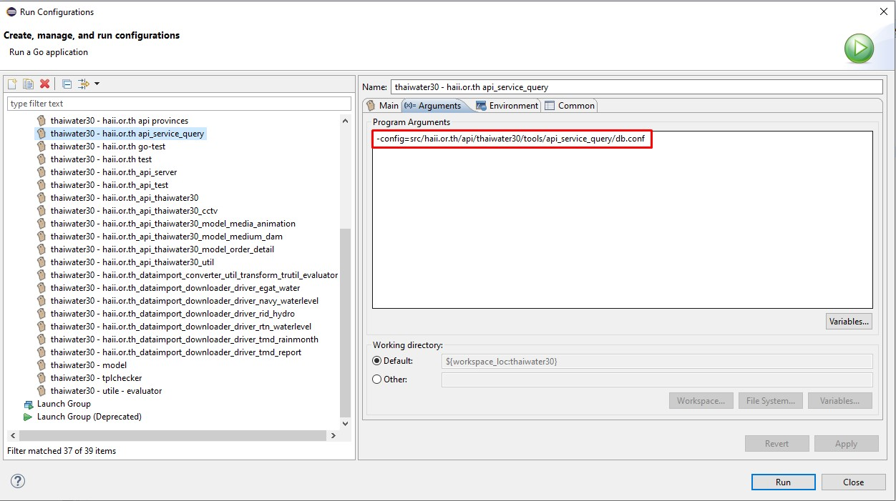
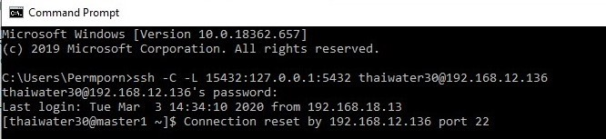
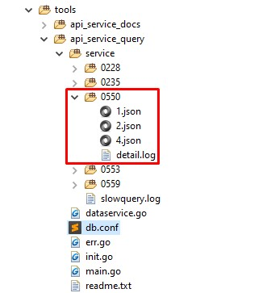

โฟล์เดอร์โค้ด api สำหรับให้ระบบบริการข้อมูล
/thaiwater30/src/haii.or.th/api/thaiwater30/service/api_service/
ไฟล์เริ่มต้น main.go
/thaiwater30/src/haii.or.th/api/thaiwater30/service/api_service/main.go
เริ่มต้นที่ function handleGetData() จะเป็นฟังก์ชั่นหลักในการทำงานของ api สำหรับให้บริการข้อมูล โดยข้างล่างจะเป็นโค้ดบ้างส่วนของฟังก์ชั่น จากโค้ดส่วนแรกจะเป็น สร้างตัวแปร และรับ parameter แล้วเช็คแล้วนำ parameter ส่งไปยังฟังก์ชั่น GetMetadataByEId() โดยส่งค่า eid
// thaiwater30/src/haii.or.th/api/thaiwater30/service/api_service/main.go
func (srv *HttpService) handleGetData(ctx service.RequestContext) error {
media_url := ctx.BuildURL(0, "thaiwater30/shared/file", true)
p := &ApiService{}
// has eid ?
if err := ctx.GetRequestParams(p); err != nil {
return rest.NewError(404, "no eid", nil)
}
// has metadata id ?
if p.MetadataId <= 0 {
return rest.NewError(422, "invalid mid", nil)
}
// decrypt eid
_s_id, err := model.GetCipher().DecryptText(p.Eid)
if err != nil {
return rest.NewError(422, "invalid eid", nil)
}
// check _s_id is int
_, err = strconv.ParseInt(_s_id, 10, 64)
if err != nil {
return rest.NewError(422, "invalid eid", nil)
}
// Get Matadata by Eid
sd, err := model_order_detail.GetMetadataByEId(p.Eid) // <<<<<<<< function
if err != nil {
return err
}
...
}
ฟังก์ชั่น GetMetadataByEId() เรียกฟังก์ชั่น scanMetadata() แล้ว return ค่าคืนไปยัง main
// thaiwater30/src/haii.or.th/api/thaiwater30/model/order_detail/get_service.go
func GetMetadataByEId(e_id string) (*Strct_Data, error) {
return scanMetadata(0, 0, e_id) // <<<<<<<< function
}
ฟังก์ชั่น scanMetadata() เรียกฟังก์ชั่น GetTable() เพื่อเลือก field map table ที่ต้องการจาก ชื่อTable
// thaiwater30/src/haii.or.th/api/thaiwater30/model/order_detail/get_service.go
func scanMetadata(od_id, m_id int64, e_id string) (*Strct_Data, error) {
db, err := pqx.Open() // connect database
if err != nil {
return nil, err
}
var (
strSql string // ประกาศตัวแปรที่จะใช้งาน
itf []interface{}
_service_id sql.NullInt64
_detail_fromdate sql.NullString
...
)
itf = make([]interface{}, 0)
// เลือกใช้ sql ตาม parameter
if e_id != "" {
strSql = SQL_SelectMetadata_FromEId // query metadata
itf = append(itf, e_id)
} else if od_id != 0 {
strSql = SQL_SelectMetadata
itf = append(itf, od_id)
} else if m_id != 0 {
strSql = SQL_SelectMetadata_FromMetadata
itf = append(itf, m_id)
}
err = db.QueryRow(strSql, itf...).
Scan(&_service_id, &_detail_fromdate, &_detail_todate, &_metadata_id,
...
data := &Strct_Data{} // ใส่ค่า
data.Service_id = _service_id.Int64
data.Detail_fromdate = _detail_fromdate
...
var _im_f map[string]interface{}
var temp_selecte_field string = ""
json.Unmarshal([]byte(_import_f.String), &_im_f)
// สร้าง select field จาก Table map config
var table = _table_name.String
st := model_metadata.GetTable(table) // <<<<<<<< function
...
return data, nil
}
ฟังก์ชั่น GetTable() จะรับชื่อ table ไป map กับ mapStrctTable ไว้สำหรับเป็น config parameter ไปใช้ในการ gen query ของ api สำหรับให้บริการข้อมูล แล้วทำการ return ค่าที่ map ได้คืนมา
// thaiwater30/src/haii.or.th/api/thaiwater30/model/metadata/map.go
// get map table
// Parameters: table ชื่อตาราง
// Return: map table ที่เตรียมไว้ล่วงหน้า
func GetTable(table string) *Struct_Table {
if s, ok := mapStrctTable[table]; ok { // <<<<<<<< function
return s
}
return nil
}
ตัวอย่าง mapStrctTable ที่ได้สร้างไว้แล้ว
// thaiwater30/src/haii.or.th/api/thaiwater30/model/metadata/map.go
var mapStrctTable = map[string]*Struct_Table{
"agency": &Struct_Table{
Table: "agency",
Fields: "id, agency_name, agency_name->>'th', agency_name->>'en'",
IsMaster: true},
"m_tele_station": &Struct_Table{
Table: "m_tele_station",
SelectColumn: " tele_station_name, tele_station_name->>'th', tele_station_name->>'en', tele_station_lat, tele_station_long ",
Fields: "id, tele_station_oldcode, agency_id, tele_station_type, tele_station_name, tele_station_lat, tele_station_long",
WhereHydro: "hydro_id IS NOT NULL ", // <<<<ส่วนที่เพิ่มเติม
IsMaster: true,
HasProvince: true,
HasBasin: true},
...
}
ทำการเพิ่มเงื่อนไขที่ต้องการจะ Where query ใน Struct_Table m_tele_station ทำการเพิ่ม “hydro_id IS NOT NULL”
WhereHydro: "hydro_id IS NOT NULL ",
แล้วทำการเพิ่มที่ field WhereHydro string ใน Struct
// thaiwater30/src/haii.or.th/api/thaiwater30/model/metadata/struct.go
// map struct table ที่เตรียมไว้สำหรับ shopping
type Struct_Table struct {
Table string // ชื่อตาราง
PartitionField string // ชื่อ partition field
MasterId string // ชื่อ master id field
MasterTable string // ชื่อ master table
SelectColumn string
Fields string // field lookup table
WhereHAII string // เงื่อนไขถ้าเป็น สสนก
Where string // เพิ่มเงื่อนไข ให้ value <> 999999
WhereHydro string // เพิ่มเงื่อนไข eget hydro1-8 // <<<<ส่วนที่เพิ่มเติม
IsMaster bool // เป็นตาราง master?
HasProvince bool // มี geocode_id ในตาราง?
HasBasin bool // มี subbasin_id ในตาราง?
}
เมื่อเพิ่มเงื่อนไขใน Struct_Table แล้วจะได้ค่า return เป็น Metadata กลับมา หลังจากนั้นไป get query ได้ที่ฟังก์ชั่น GetMetadataQueryResult() ฟังก์ชั่นจะส่ง parameter ที่ได้จากการ ฟังก์ชั่น GetMetadataByEId() ไป
// thaiwater30/src/haii.or.th/api/thaiwater30/service/api_service/main.go
func (srv *HttpService) handleGetData(ctx service.RequestContext) error {
...
// Get Matadata by Eid
sd, err := model_order_detail.GetMetadataByEId(p.Eid) // <<<<<<<< function
if err != nil {
return err
}
...
// get query result
row, err := model_order_detail.GetMetadataQueryResult(sd) // <<<<<<<< function
if err != nil {
return err
}
...
return nil
}
ฟังก์ชั่น GetMetadataQueryResult เรียกฟังก์ชั่น SQL_GenSQLSelectDataservice_All() ส่ง Struct_Table เพื่อไป Gen SQL
// thaiwater30/src/haii.or.th/api/thaiwater30/model/order_detail/get_service.go
// get query result ของ SelectedFields
func GetMetadataQueryResult(p *Strct_Data) (*sql.Rows, error) {
db, err := pqx.Open()
if err != nil {
return nil, err
}
var (
row *sql.Rows
itf []interface{}
)
itf = make([]interface{}, 0)
...
// สร้าง sql
p.Sql, itf = SQL_GenSQLSelectDataservice_All(p) // <<<<<<<< function
row, err = db.Query(p.Sql, itf...)
if err != nil {
return nil, err
}
return row, nil
}
ฟังก์ชั่น SQL_GenSQLSelectDataservice_All() จะทำการ gen query ตามเงื่อนไข ด้านล่างเป็นโค้ดบ้างส่วน สามารถเพิ่มเงื่อนไข query ได้ในฟังก์ชั่นนี้
// thaiwater30/src/haii.or.th/api/thaiwater30/model/order_detail/get_service.go
// genarate sql string สำหรับ data_service
// Parameters: p Strct_Data
// Retun: sql string, parameter
func SQL_GenSQLSelectDataservice_All(p *Strct_Data) (string, []interface{}) {
var q string = ""
itf := make([]interface{}, 0)
var (
table_name = p.Table_name.String
agency_id = p.Agency_id.String
...
)
m_id := model_metadata.GetColumnMasterId(table_name)
st := model_metadata.GetTable(table_name)
if st.MasterTable == "" { // ไม่มี master table ไม่ต้อง join
...
} else if st.IsMaster {
q += " WHERE tt.agency_id = '" + agency_id + "' AND tt.deleted_at = to_timestamp(0) "
}
} else { // มีตัว master table ต้อง join master เพื่อเอา geocode, subbasin_id
// q = "SELECT " + selectField + " FROM " + st.MasterTable + " m " +
q = " INNER JOIN " + st.MasterTable + " m ON m.id = tt." + m_id
...
}
if media_type_id != "" {
q += " AND tt.media_type_id IN (" + media_type_id + ") "
}
if province != "" {
q += " AND nullif(lg.province_code,'')::integer IN (" + province + ") "
}
if basin != "" {
q += " AND s.basin_id IN (" + basin + ") "
}
// เพิ่มเงื่อนไข query ข้อมูล value <> 999999
if st.Where != "" {
q += " AND " + st.Where + " "
}
if st.WhereHAII != "" {
q += " AND " + st.WhereHAII + " "
}
// เพิ่มเงื่อนไข query station ที่เเป็น hydro 1-8
if (metadata_id == 550 || metadata_id == 228) && st.WhereHydro != "" {
q += " AND " + st.WhereHydro + " "
}
// เพิ่มเงื่อนไข query ข้อมูลถ้าใน dataset มี qc_status
if hasQC {
q += " AND (qc_status IS NULL OR qc_status->>'is_pass' = 'true') "
}
if st.PartitionField != "" {
q += " ORDER BY tt." + st.PartitionField + " DESC"
}
if st.IsMaster { // เป็น master table เรียงตาม id
q += " ORDER BY tt.id "
}
q = "SELECT " + selectField + " FROM " + table_name + " tt " + q
return q, itf
}
ทำการเพิ่มเงื่อนไข query station ที่เป็น hydro 1-8 เท่านั้น โดยเข้าเงื่อนไขก็ต่อเมื่อ metadata_id == 550 หรือ metadata_id == 228 และมี WhereHydro ไม่เท่ากับค่าว่าง ซึ่งในส่วนของ WhereHydro เราได้ทำการเพิ่มไว้ที่ mapStrctTable แล้วช่วงแรก ถ้าเข้าเงื่อนไขดังกล่าว ก็จะเพิ่ม WHERE ได้
// เพิ่มเงื่อนไข query station ที่เเป็น hydro 1-8 เท่านั้น
if (metadata_id == 550 || metadata_id == 228) && st.WhereHydro != "" {
q += " AND " + st.WhereHydro + " "
}
ตัวอย่าง query metadata_id 550 ที่ได้ สังเกตจะมีเงื่อนไข hydro_id IS NOT NULL เพิ่มเข้าไปทำให้ api ของบัญชีข้อมูลพื้นฐานของสถานีวัดน้ำท่าจากศูนย์อุทกวิทยา ภาค1-8 เราถูกต้อง โดยจะแสดงสถานีที่เป็น ศูนย์อุทกวิทยา ภาค1-8 เท่านั้น
SELECT tt.id, tt.agency_id , tt.tele_station_name , tt.tele_station_type , tt.tele_station_lat , tt.tele_station_long , lg.province_name, lg.amphoe_name, lg.tumbon_name, tt.tele_station_oldcode , tt.riverbank , tt.station_type_msl , tt.hydro_id , tt.offset , tt.qmax
FROM m_tele_station tt
LEFT JOIN lt_geocode lg ON tt.geocode_id = lg.id
LEFT JOIN subbasin s ON tt.subbasin_id = s.id
WHERE tt.agency_id = '12'
AND tt.deleted_at = to_timestamp(0)
AND hydro_id IS NOT NULL
ORDER BY tt.id
หมายเหตุ คู่มืออาจจะไม่ได้ลงโค้ดทุกส่วน จะอธิบายส่วนที่ใช้ในการทำเท่านั้น
โฟล์เดอร์หลักจะอยู่ใน
/thaiwater30/src/haii.or.th/api/thaiwater30/tools/api_service_query
ไฟล์เริ่มต้น main.go ทำการเปลี่ยน metadata id ดังโค้ดด้านล่างจะทำการทดสอบ metadata id 550
// thaiwater30/src/haii.or.th/api/thaiwater30/tools/api_service_query/main.go
package main
import ()
func main() {
initDB()
var service_id int64 = 550// metadata id
testDataserviceById(service_id)
}
เพิ่ม run configurations ดังนี้


shh connect database

เมื่อกด run configurations ที่เพิ่มไว้ โค้ดจะ gen โฟล์เดอร์ชื่อตาม metadata id เช่น ตัวอย่างที่รันเป็น 550 ในโฟล์เดอร์จะมี ไฟล์ detail.log เป็น sql และไฟล์ .json เป็นข้อมูลที่ได้จาก query sql

ตัวอย่างไฟล์ .json ที่ได้
[
{
"agency_id": 12,
"amphoe_name": null,
"hydro_id": 8,
"id": 2559,
"offset": null,
"province_name": null,
"qmax": 204,
"riverbank": 8.2,
"station_type_msl": 1,
"tele_station_lat": "6.022610",
"tele_station_long": "101.974892",
"tele_station_name": {
"th": "บริเวณสะพานลันตู"
},
"tele_station_oldcode": "X.119A",
"tele_station_type": "W",
"tumbon_name": null
},
{
"agency_id": 12,
"amphoe_name": {
"th": "มะนัง"
},
"hydro_id": 8,
"id": 2561,
"offset": null,
"province_name": {
"th": "สตูล"
},
"qmax": 265,
"riverbank": 12.8,
"station_type_msl": 1,
"tele_station_lat": "6.940820",
"tele_station_long": "99.872917",
"tele_station_name": {
"th": "บ้านวังพระเคียน"
},
"tele_station_oldcode": "X.150",
"tele_station_type": "W",
"tumbon_name": {
"th": "นิคมพัฒนา"
}
},
]
ตัวอย่างไฟล์ detail.log
Service id : 1
Query : SELECT tt.id, tt.agency_id , tt.tele_station_name , tt.tele_station_type , tt.tele_station_lat , tt.tele_station_long , lg.province_name, lg.amphoe_name, lg.tumbon_name, tt.tele_station_oldcode , tt.riverbank , tt.station_type_msl , tt.hydro_id , tt.offset , tt.qmax FROM m_tele_station tt LEFT JOIN lt_geocode lg ON tt.geocode_id = lg.id LEFT JOIN subbasin s ON tt.subbasin_id = s.id WHERE tt.agency_id = '12' AND tt.deleted_at = to_timestamp(0) AND hydro_id IS NOT NULL ORDER BY tt.id
Param : []
(0.01995 sec)
rows 286
================================
Service id : 2
Query : SELECT tt.id, tt.agency_id , tt.tele_station_name , tt.tele_station_type , tt.tele_station_lat , tt.tele_station_long , lg.province_name, lg.amphoe_name, lg.tumbon_name, tt.tele_station_oldcode , tt.riverbank , tt.station_type_msl , tt.hydro_id , tt.offset , tt.qmax FROM m_tele_station tt LEFT JOIN lt_geocode lg ON tt.geocode_id = lg.id LEFT JOIN subbasin s ON tt.subbasin_id = s.id WHERE tt.agency_id = '12' AND tt.deleted_at = to_timestamp(0) AND hydro_id IS NOT NULL ORDER BY tt.id
Param : []
(0.00705 sec)
rows 286
================================
Service id : 4
Query : SELECT tt.id, tt.agency_id , tt.tele_station_name , tt.tele_station_type , tt.tele_station_lat , tt.tele_station_long , lg.province_name, lg.amphoe_name, lg.tumbon_name, tt.tele_station_oldcode , tt.riverbank , tt.station_type_msl , tt.hydro_id , tt.offset , tt.qmax FROM m_tele_station tt LEFT JOIN lt_geocode lg ON tt.geocode_id = lg.id LEFT JOIN subbasin s ON tt.subbasin_id = s.id WHERE tt.agency_id = '12' AND tt.deleted_at = to_timestamp(0) AND hydro_id IS NOT NULL ORDER BY tt.id
Param : []
(0.00573 sec)
rows 286